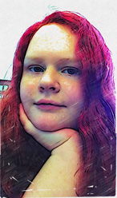

About Me
Cynthia
I am attending BYUI online majoring in Applied Technology.
I love to draw, play video games, and watch TV.
I have three cute cats: Anya a calico who is grumpy, Natasha a small maine coon, and a very small manx named Phinn who is terrified of everything. She is the definition of "scardy cat."
I graduated High School this past June as the "class of COVID-19"
I have been doing a little sidework working on two websites with my Dad who has been doing this for 20 years.
This is only my first semester at BYUI, but I can definitly feel the spirit, and God's hand in how its run.
I have been a member of The Church of Jesus Christ of Latter-Day Saints all my life and I love being a part of it.